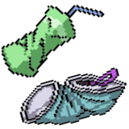

인간 중심주의를 아시나요?
인간 중심주의란 오직 인간만이 이성을 지닌 존재라는 점에서 인간에게만
본래적 가치를 인정하고,
자연을 순전히 인간의 이익이나 필요에 따라
평가하는 관점이다.
이는 인간의 욕구 충족을 위한 도구로서 자연이 지니는 유용성을 중시하는
'도구적 자연관'에 근거한다.
인간은 자연을 탐구하고 개발함으로써 과학 기술의 발전과 경제 성장을
이루어 인간의 삶을 풍요롭게 하고,
물질적인 욕망을 좇아 자연을
함부로 사용하여 훼손한 결과
자원 고갈, 환경 오염, 생태계 파괴 등과 같은 환경 위기가 나타났다.
Eco-runner!는 이러한 인간 중심주의로 인해 초래된 현대사회의 환경
위기로부터 환경을 정화하여 지키려는 player의 러닝 게임이다.
player는 공장에서 나오는 폐수나 가스들, 인간이 만들어낸 쓰레기로 인해서
오염된 환경을 배경으로 더 많은 환경들을 정화하기 위해 달린다.
